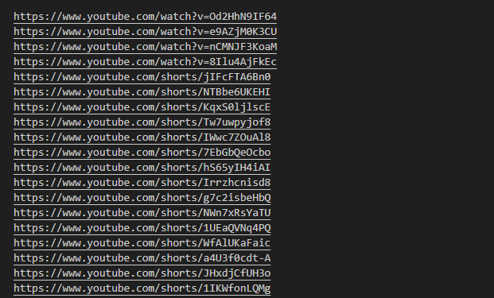

Windows uses backslashes (\) as path separators (e.g.,
'C:\\Users\\Username\\file.txt').Linux uses forward slashes (/) as path separators (e.g.,
'/home/username/file.txt').
The function is used to construct paths in a way that is appropriate for the operating system.
- os.getcwd():
Returns the current working directory in the respective path format.
Accessing environment variables using os.environ is consistent, but the actual variables may differ. For example, the home directory variable is %USERPROFILE% on Windows and $HOME on Linux.
Functions like os.listdir() , os.mkdir(), and os.remove() are consistent across platforms for basic file and directory operations.
Functions like os.chmod() and os.chown() may behave differently or have limited functionality on Windows compared to Linux.
Functions like os.system(), os.getpid(), and os.cpu_count() behave consistently across platforms.
- os.path.join()
and related functions handle path manipulation in a platform-independent way.
- Handling of symbolic links (e.g., os.symlink())
may differ between Windows and Linux due to differences in how each system manages symbolic links.
- os.get_terminal_size()
may behave differently or not be available on certain platforms.
- os.scandir()
provides a platform-independent way to iterate over directory entries.
File Descriptor Operations and File and Directory Permissions in the os Module
- File Descriptor Operations:
-
Opens / Closes a file and returns a file descriptor.
- Opening files # os.open(file, flags[, mode]):
Example 1 : Checking Readability
Code
import os
file_path = "E:\chrom_links.txt"
# Check if the file is readable
if os.access(file_path, os.R_OK):
with open(file_path, 'r', encoding='utf-8', errors='ignore') as file:
content = file.read()
print(content)
else:
print("File is not readable.")
 -
File closing os.close(fd)
Example 2 : Closes a file descriptor.
Code
import os
# Open a file and get a file descriptor
fd = os.open("E:\chrom_links.txt", os.O_RDONLY)
# Do some operations with the file descriptor
print(fd)
# Close the file descriptor
os.close(fd)

- file (str)
- flag (int)
- A combination of flags that control the behavior of the file descriptor. Flags are expressed as bitwise OR (|) of the constants defined in the os module.
- '|' (bitwise OR) operator
- os.O_RDONLY: Open for reading only.
- os.O_WRONLY: Open for writing only.
- os.O_RDWR: Open for both reading and writing.
- os.O_APPEND: Set the file pointer to the end of the file before each write.
- os.O_CREAT: Create the file if it does not exist.
- os.O_EXCL: Ensure that this call creates the file exclusively (fails if the file already exists).
- os.O_TRUNC: Truncate the file to zero length if it exists.
- mode(int,optional)
- The permissions to set if the file is created (used in conjunction with the os.O_CREAT flag).
- The mode parameter is an octal value representing the permissions (e.g., 0o777).
- This parameter is typically not used on Windows.
- os.O_BINARY and os.O_TEXT (Windows-specific):
- On Windows, you can use these flags to control how the file is opened with respect to line endings.
- os.O_BINARY: Open the file in binary mode.
- os.O_TEXT: Open the file in text mode.
Notes :
Parameters:
The path to the file that you want to open.
Other Possible attributes :
- Opening files # os.open(file, flags[, mode]):
- File Descriptor (fd):
- The returned file descriptor is an integer that represents the opened file. This descriptor is used in subsequent file-related operations.
- The file is opened for writing (os.O_WRONLY).
- The os.O_CREAT flag ensures that the file is created if it doesn't exist.
- The os.O_TRUNC flag truncates the file to zero length.
- The 0o644 permission is set if the file is created.
os.open(file, flags[, mode]):
In this example:
Explain with open() as file :
-
with open("example.txt", 'r') as file:
content = file.read()
# Perform operations on the file content
- with Statement: The with statement is used to wrap the execution of a block of code with methods defined by a context manager. For file handling, it ensures that the file is properly opened and closed.
- open("example.txt", 'r'): The open function is used to open a file. In this case, it opens "example.txt" in read-only mode ('r'). The file is opened within the context of the with statement.
- as file: The as keyword is used to create a variable (file in this case) that references the opened file object. The variable file is only accessible within the indented block under the with statement.
- File Operations: Inside the with block, you can perform operations on the file using the file variable. In this example, file.read() reads the content of the file into the content variable.
- Automatic File Closure: Once the code block under the with statement is executed, the file is automatically closed. This ensures proper resource management.
Explanation:
Alternative Ways or Possibilities:
- Using a Different Mode:
- Using readlines() for Line-by-Line Reading:
- Handling Exceptions:
- Using with for Multiple Files:
You can open the file in different modes based on your
requirements (e.g., 'w' for write, 'a' for append).
Example:
with open("example.txt", 'w') as file:
file.write("New content")
If you want to read the file line by line, you can use the readlines() method.
Example:
with open("example.txt", 'r') as file:
lines = file.readlines()
# Process each line
You can add exception handling to deal with potential issues,
such as file not found or permission errors.
Example:
try:
with open("example.txt", 'r') as file:
content = file.read()
# Perform operations on the file content
except FileNotFoundError:
print("File not found.")
except IOError:
print("Error reading the file.")
You can use multiple with statements for managing multiple
files simultaneously.
Example:
with open("file1.txt", 'r') as file1, open("file2.txt", 'w') as file2:
# Perform operations on both files
The os.listdir() function is used to get the list of entries in the specified directory. If no directory path is provided, it defaults to the current working directory. It returns a list containing the names of the entries (files and directories) in the specified directory.
-
Parameters:
path (str, optional): The path of the directory for which you want to list the entries. Defaults to the current working directory if not provided.
-
Compatibility:
- Windows
This function is compatible with Windows. It retrieves the list of entries in the specified directory on Windows file systems.
- Linux
Similarly, it works on Linux systems to get the list of entries in the specified directory.
- Windows
The os.chdir() function is used to change the current working directory to the specified path.
- Parameters
path (str): The path to the directory to which you want to change the current working directory.
- Compatibility
- Windows
This function is compatible with Windows. It allows changing the current working directory on Windows systems.
- Linux
Similarly, it works on Linux systems to change the current working directory.
- Windows

 _image.png)
_img10c.png) output folder status
output folder status 2.png)
_IMG1.png)
_IMG2.png)
_IMG3.png)
_IMG4.png)
_IMG5.png)
_IMG6.png)
_via_path_IMG7.png)
_via_path_IMG7a.png)

_IMG.png)
_IMG.png)
_IMG.png)
_IMG.png)
_IMG.png)
_IMG.png)
_IMG.png)